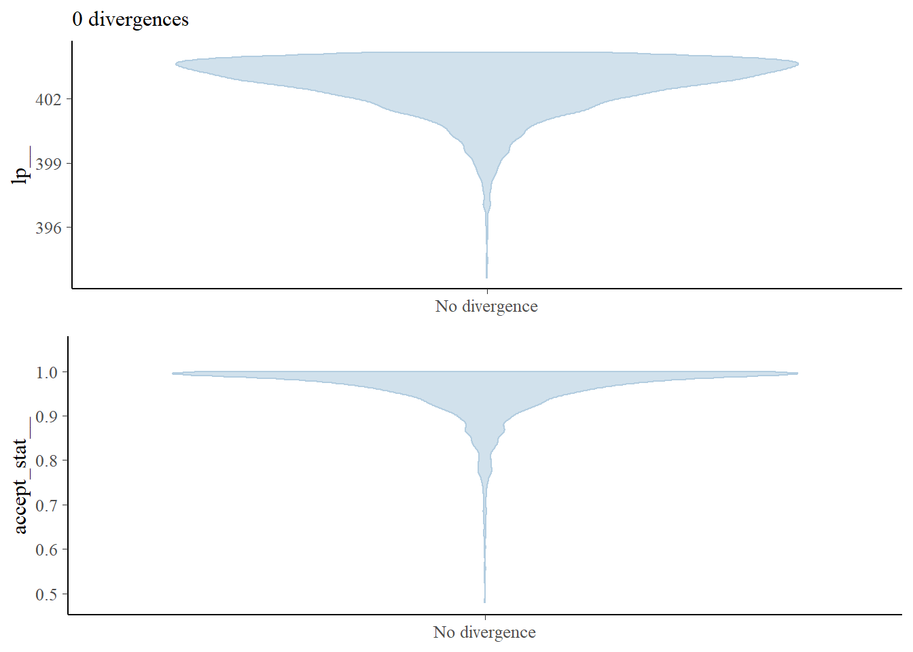
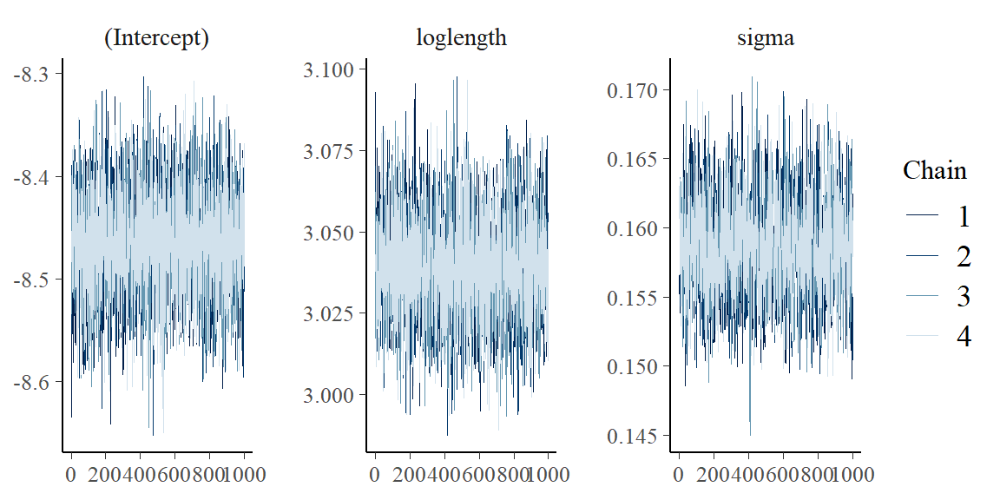
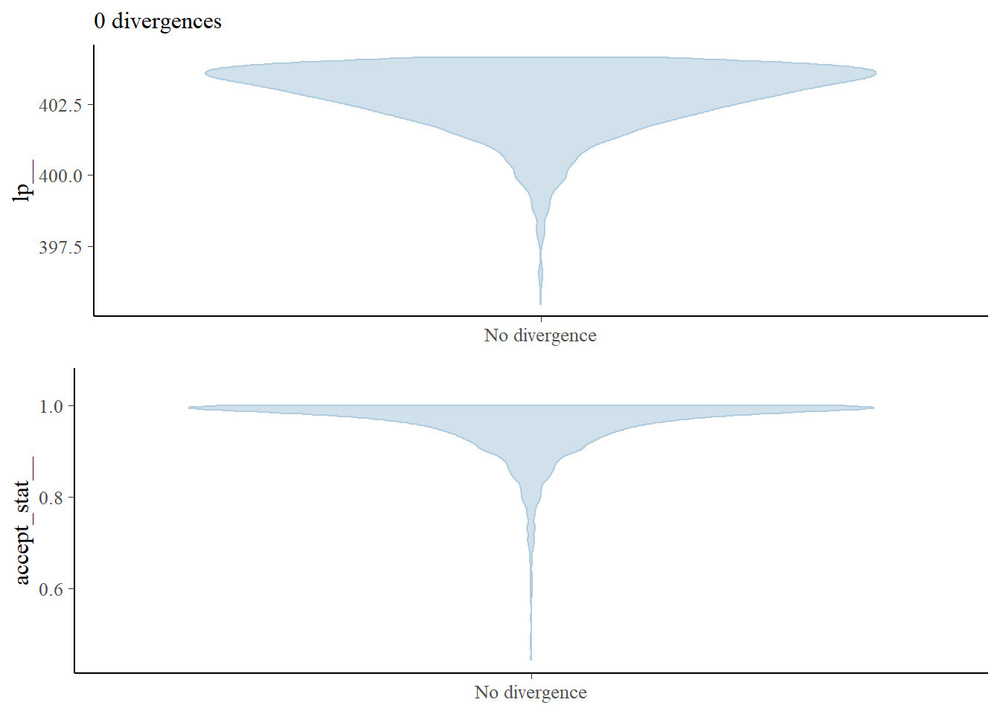

14.4 Worked example
Let’s start by loading in a new data set. These data come from a preliminary study of rusty crayfish Faxonius rusticus density in various tributaries to the Susquehanna River. The data were collected as part of a summer research project by one of our former high-school interns at the SUNY Oneonta Biological Field Station .
# Read in the data file
# We are reading it in with the optional
# argument because we don't want to deal
# with code relicts if we start
# dropping factor levels
cray <- read.csv("data/cray.csv", stringsAsFactors = FALSE)## 'data.frame': 964 obs. of 7 variables:
## $ date : chr "6/28/2018" "6/28/2018" "6/28/2018" "6/28/2018" ...
## $ waterbody: chr "Susquehanna River" "Susquehanna River" "Susquehanna River" "Susquehanna River" ...
## $ site : chr "Cooperstown Dam" "Cooperstown Dam" "Cooperstown Dam" "Cooperstown Dam" ...
## $ length : num 30.9 31.2 31.1 29.3 28.3 ...
## $ mass : num 7.18 6.85 6.75 6.46 6.14 5.99 5.58 4.95 4.85 4.81 ...
## $ loglength: num 3.43 3.44 3.44 3.38 3.34 ...
## $ logmass : num 1.97 1.92 1.91 1.87 1.81 ...## date waterbody site length mass
## 1 6/28/2018 Susquehanna River Cooperstown Dam 30.88 7.18
## 2 6/28/2018 Susquehanna River Cooperstown Dam 31.18 6.85
## 3 6/28/2018 Susquehanna River Cooperstown Dam 31.15 6.75
## 4 6/28/2018 Susquehanna River Cooperstown Dam 29.28 6.46
## 5 6/28/2018 Susquehanna River Cooperstown Dam 28.31 6.14
## 6 6/28/2018 Susquehanna River Cooperstown Dam 30.55 5.99
## loglength logmass
## 1 3.430109 1.971299
## 2 3.439777 1.924249
## 3 3.438814 1.909543
## 4 3.376905 1.865629
## 5 3.343215 1.814825
## 6 3.419365 1.790091This is a fairly straightforward data set. There are 964 observations of 7 variables. Each of the observations (rows) corresponds to a rusty crayfish that was collected and measured (length in mm and mass in g) at one of several sites on a given date. The variable catch is the total number caught by electrobugging over a given time (minutes). To compare density between sites, catch was divided by (time/60) to calculate catch per unit effort (cpue) as number of crayfish per hour. Therefore, observations of cpue, catch, and time correspond to unique date and site combinations, but length and mass represent unique individuals within site and date.
Our primary objective in this study was to collect baseline data. But curiosity led us to explore variation in the condition of crayfish when we thought we were noticing skinnier crayfish in sites of higher density. Length-weight regressions are one tool that is commonly used to investigate changes in volumetric growth with increasing length. In the absence of a standardized condition metric such as that widely applied in fish populations, relative weight (Wr), we thought this might offer some insight into variability in condition.
What follows is a steroid-injected version of the analysis we started with.
Length-weight relationships in animals are generally parameterized by log-transforming length and mass. This is because the relationship between the two is exponential, or can be described using a power function (ouch, think back to intro bio). For a given unit increase in length, we expect mass to increase as an approximately cubic function of length.
We can see this in our un-transformed data pretty cleanly:

The relationship depicted above can be expressed mathematically as:
\[W = aL^b,\]
and statistically as:
\[W_i = a {L_i}^b e^{\epsilon_i},\]
where \(W_i\) is mass (weight) of individual \(_i\), \(L_i\) is length of the individual, \(a\) and \(b\) are the coefficient and exponent describing change in mass as a function of length, and \(\epsilon_i\) is the multiplicative error term for each crayfish (residuals change with length). Here, \(b\) also has interpretation relative to allometry in growth patterns, where values of 3.0 indicate isometry, values below 3 indicate negative allometry, and values above 3 indicate positive allometry in the length-weight relationship. This means that at values much above 3, we would expect individuals to get heavier faster relative to their length at large sizes.
We can certainly estimate this kind of relationship using nonlinear regression. But, nonlinear regression can get a little unstable due to inherent correlations between parameters, and the multiplicative error described above. So, it can be easier to log-transform both sides of the equation to make the relationship linear and achieve a constant error across the range of X (homoscedasticity). As a result, we generally linearize relationships like this to improve modeling whenever we can, in this case by taking the natural logarithm of both sides of the equation:
\[log(W_i) = log(a) + b \cdot log(L_i) + \epsilon_i\]
Now, that should look a whole lot like the linear models we have been talking about all semester. In fact, by substitution, we could say that:
\[Y = \beta_0 + \beta_1 \cdot X_i + \epsilon_i\]
where \(Y\) is log(mass), and \(X\) is log(length). Then, we just need to remember that \(\beta_0\) is estimated on the log scale.
We can take a look at how this looks in our data by plotting the transformed data.
Start by log-transforming length and mass
Plot the relationship. Note that only the names have been changed
If nothing else, this tells me we need to go after more small cray next summer. For now, let’s get rid of all crayfish weighing less than 1 g because the data are sparse down there and small values are known to cause some trouble in these kinds of models [still refusing to provide citations].
Now, let’s take a look at the residual diagnostics for a linear model that includes a group effect of site and (of course) length as explanatory variables that we will use to predict changes in our response of interest, mass.
testmod <- lm(logmass ~ loglength + site, data = cray)
ggplot(testmod, aes(x = site, y = .resid, fill = site, color = site)) +
geom_violin(alpha = 0.20, trim = FALSE) +
geom_jitter(width = 0.1, alpha = 0.20)These look pretty good over all, but you should recognize at this point that we may have some concerns about whether or not variances are equal between groups, and whether observations at each site can really be considered independent (they cannot).
Next, we will take a look at a few different ways to analyze these data using maximum likelihood estimation. Our goal here is to estimate the relationship between length and mass while accounting for inherent variability between sites.
14.4.1 Random-intercepts model
First, we will analyze the data assuming that the intercepts for our linear model can vary between populations, but the relationship between length and mass is the same across all populations. This is a very common approach in many ecological and biological applications, as it often is the case that we are just trying to account for sampling design when we do this kind of analysis.
This is really straightforward to do in R. First, load the lme4 package if you didn’t do it at the start of the chapter.
Next, we fit the model. To do this we will use the lmer() function. Notice that now we have to add an argument to specify a random effect of site on the intercept 1. This is our way of telling R that we want to account for site-specific variability in the length-mass relationship.
Being responsible individuals, we now have a look at the residuals to make sure we’ve met assumptions of normality and homoscedasticity:
# Plot the residuals
ggplot(craymod, aes(x = site, y = .resid, fill = site, color = site)) +
geom_violin(alpha = 0.20, trim = FALSE) +
geom_jitter(width = 0.1, alpha = 0.20)That’s looking about as good as we could hope for, so now let’s go ahead and crack open the model summary.
## Linear mixed model fit by REML ['lmerMod']
## Formula: logmass ~ loglength + (1 | site)
## Data: cray
##
## REML criterion at convergence: -980.3
##
## Scaled residuals:
## Min 1Q Median 3Q Max
## -8.0026 -0.5412 -0.0534 0.4781 6.2908
##
## Random effects:
## Groups Name Variance Std.Dev.
## site (Intercept) 0.001792 0.04234
## Residual 0.018911 0.13752
## Number of obs: 890, groups: site, 6
##
## Fixed effects:
## Estimate Std. Error t value
## (Intercept) -7.99294 0.08031 -99.53
## loglength 2.89236 0.02417 119.64
##
## Correlation of Fixed Effects:
## (Intr)
## loglength -0.975For now, we will skip the usual walkthrough of all the wonderful tidbits that R has to offer and cut right to the chase. We can see from the table for our fixed effects that we have successfully detected the relationship between length and mass (p < 0.05), but this should come as no surprise based on the plot we saw and the fact that I already told you this is a well conserved biological relationship.
We can see that the estimated sd for our intercept is fairly low, so we may not need to specify this as a random effect were we concerned about model complexity. Given that we are interested in this random effect, and that we (in this case) want to think of site as having been sampled from a broader population of sites, we will retain it in our model. From here, we could go on to make predictions across populations using our fixed intercept and slope, or we could use the population specific intercepts and the shared slope.
First, let’s make some predictions about the average relationship between length and mass in each site. This is still really easy to do using the built-in predict() methods for lmer() objects:
# Make predictions from craymod
log_preds <- predict(craymod)
# Undo the log-transform
real_preds <- exp(log_preds)
# Combine them with the original data
cray_preds <- data.frame(cray, log_preds, real_preds)Now we can plot our predictions by treating this just like any other model:
ggplot(cray_preds, aes(x = length, y = mass, color = site, fill = site)) +
geom_point(alpha = 0.10) +
geom_line(aes(y = real_preds), lwd = 1, alpha = 0.50) +
xlab("Carapace length (mm)") +
ylab("Mass (g)")This is helpful for identifying some of the differences between sites. In this case, it looks like we have slightly smaller crayfish in a handful of sites (Bailey Road, Colliersville, and Route 80) and the rest of them look pretty similar. It can be difficult to see how our model fits the data for individual groups. Remember, that we could address this by using a quick facet_wrap() in our plotting code:
ggplot(cray_preds, aes(x = length, y = mass, color = site, fill = site)) +
geom_point(alpha = 0.10) +
geom_line(aes(y = real_preds), lwd = 1, alpha = 0.50) +
facet_wrap(~site) +
xlab("Carapace length (mm)") +
ylab("Mass (g)")
This let’s us see how well our predictions fit the data from individual streams.
But, we still don’t really have a great way of looking at differences between groups if we are interested in those. And, we can’t see the uncertainty in our predictions (e.g. the confidence bands we usually plot with these). Why is this? We do not have the technology. Basically, computing group-specific variances is conceptually and programmatically challenging. But, we can use some simulation methods to do this, and some of these have been implemented in newer versions of the lme4 package and related packages like merTools.
IMO, if you are going to go through simulations just to approximate confidence intervals, you are probably interested in the group-level estimates as well, and you should really be thinking about Bayesian approaches at this point. But we won’t talk about those in this book because it is The Worst Stats Text eveR.
In the meantime, here is one way to compute site-specific variances for our predictions about the length-mass relationship so we don’t have to feel like we haven’t finished the job! This example uses the predictInterval() function from the merTools package to demonstrate.
# Load the merTools package
library(merTools)
# Simulate predictions from the relationship
# stored in the model fit using our original data
log_preds <- predictInterval(
merMod = craymod,
level = 0.95, n.sims = 1000,
stat = "median", type = "linear.prediction",
include.resid.var = TRUE
)
# Convert them to the real scale for plotting
real_preds <- apply(log_preds, 2, exp)
# Combine predictions with the original data
mer_preds <- data.frame(cray, real_preds)Finally, let’s add that beautiful uncertainty to our site-specific predictive plots that we made above!
ggplot(mer_preds, aes(x = length, y = mass, color = site, fill = site)) +
geom_point(alpha = 0.10) +
geom_ribbon(aes(ymin = lwr, ymax = upr, color = NULL), alpha = .3) +
geom_line(aes(y = fit), lwd = 1, alpha = 0.50) +
facet_wrap(~site) +
xlab("Carapace length (mm)") +
ylab("Mass (g)")
This may seem like a lot of work at first glance, but hopefully you do realize that it is about the same amount of code as making predictions from linear models and general linear models, and now we have introduced yet another way to dealing with violations of assumptions! Realize that these tools are still constantly being developed, and just a couple of years ago it took a lot more code to do this for mixed models than it does now.